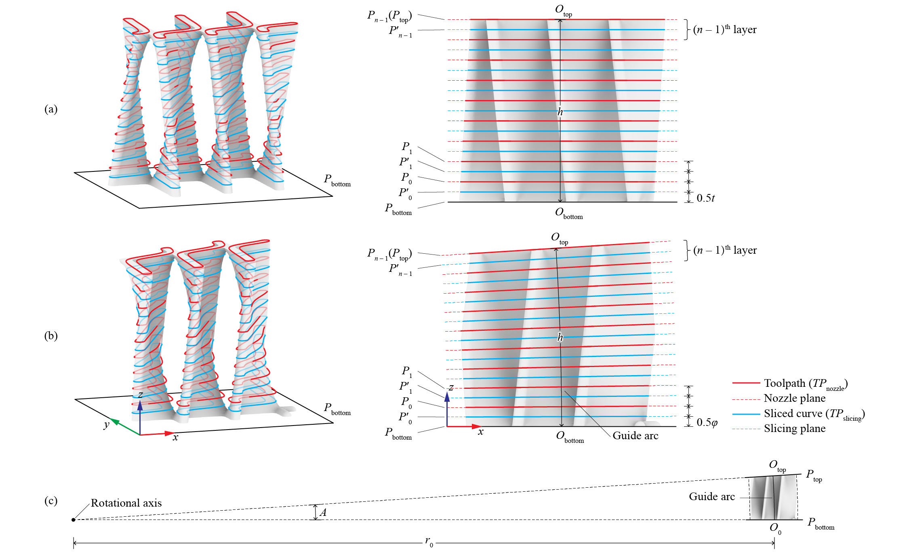
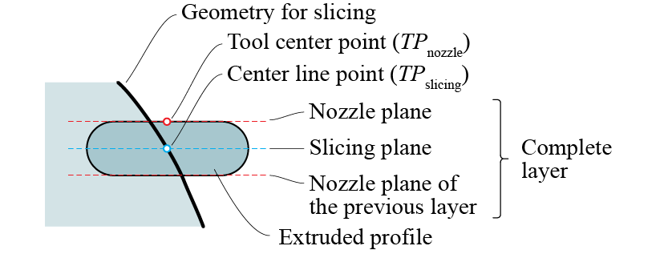
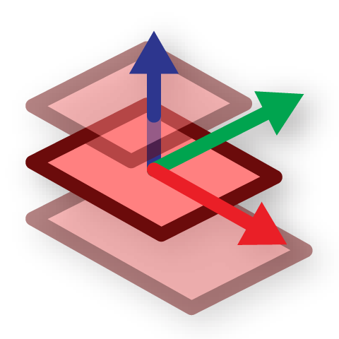

Slicing options
Orientation
The 
Slice component accepts a list of Breps and/or Meshes and slices them on the World XY plane (\(z = 0\)). Therefore, your geometry should be place upright on the World XY plane for slicing. (1) If the geometry is upright but floating (\(z\neq0\)), you can check Right Click → Use bounding bed for a quick slicing/visualization.
-
Example File
1. Introduction → (2) Minimal Working Example
By using Orient To Slice you can "snap" an arbitrarily-oriented geometry to a bed plane. (1)
-
Example File
2. Slicing Options → (1) Automatic Orientation
Parallel slicing
By default, Slice slices the geometry using parallel layers. The actual layer thickness will be adjusted based on the total height and may differ from the given thickness t. For example, if t is \(10\,\mathrm{mm}\) and the geometry is \(h=95\,\mathrm{mm}\) tall, \(10\) layers of \(9.5\,\mathrm{mm}\) will be created.
Rotary slicing
If a top plane T is given to Slice, the portion between the bed plane (World XY) and the top plane will be sliced. If the two planes are not parallel, rotary slicing will take place. The two planes define a simple rotational transformation where the bottom center \(O_\mathrm{bottom}\) of the geometry travels along an arc of length \(h\). \(h\) is the nominal "height" of the geometry. The rotational transformation is then divided equally into layers for slicing.
Orient To Slice provides a best-fit top plane that can be used as T. (1)
-
Example File
2. Slicing Options → (2) Customized Top Plane

Examples with exaggerated layer heights: (a) Parallel slicing; (b) Rotary slicing; (c) In rotary slicing, the rotational angle \(A\) is divided uniformly to form the layers (1)
- Image adapted from: Y. Zhi, H. Chai, T. Teng, and M. Akbarzadeh, “Automated toolpath design of 3D concrete printing structural components,” Additive Manufacturing, p. 104662, 2025.

With simple transformations, you can use two planes to subtract a portion of a bigger body for slicing (1)
-
Example File
2. Slicing Options → (3) Customized Bottom and Top Planes
Layer structure
Each layer of the Toolpath contains three planes: the nozzle plane, the slicing plane, and the nozzle plane of the previous layer (for the first layer, the base plane of the Toolpath instead).

Layer structure showing three planes and one point of the Toolpath
The slicing plane is the bisecting plane between the bottom and top nozzle planes. It hosts the center lines of the extrusion. Therefore, the toolpath curves \(TP_\mathrm{slicing}\) are solved by intersecting the slicing plane with the input geometry. However, in printing, the trajectory of the tool center point (TCP), or the tip of the nozzle, is on the nozzle plane. Therefore, \(TP_\mathrm{slicing}\) is oriented from the slicing plane to the nozzle plane to form \(TP_\mathrm{nozzle}\) as the actual "Tool-Path".
In Ovenbird, Toolpath is displayed as \(TP_\mathrm{nozzle}\) by default. You can check Right Click → On slicing planes to place it on the slicing planes. Nozzle planes, slicing planes, and the base plane of the Toolpath can be extracted using  Toolpath Planes. (1)
-
Example File
7. IO and Visualization → (1) Unwrapping and Wrapping
Custom slicing
You can create a Toolpath with customized layers by providing just the nozzle planes and a base plane. Unlike the result of parallel or rotary slicing, the transformations between each pair of nozzle planes can be unique, meaning the height, type (parallel or rotary), and rotation directions can be inconsistent across layers. (1)
-
Example File
2. Slicing Options → (4) Customize Each Layer
Co-slicing
To slice a series of objects as separate toolpaths, you can create a main toolpath and use it as a reference to Co-Slice other objects. They will have the same layer structure. (1)
-
Example Files
2. Slicing Options → (5) Co-Slice
2. Slicing Options → (6) Co-Slice with Orientation